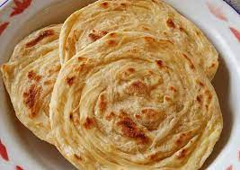
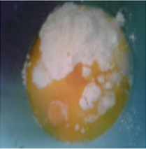
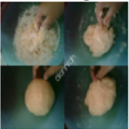
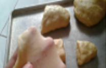

RESEP KUE MARYAM

Bahan-bahan:
250 gr tepung terigu
1 butir telur
3 sdm margarin, lelehkan
100 ml air hangat
2 sdm susu bubuk (optional)
1/2 sdt garam
margarin leleh untuk olesan
minyak untuk meredam
Langkah-langkah
- Campur semua bahan roti jadi satu

- Uleni sampai kalis, lumuri pakai tepung, dan uleni terus sampai kalis

- Kalisnya adonan canai tidak sekalis roti ya, kira kira seperti ini sudah cukup
